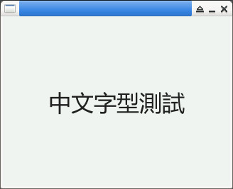

參考資訊：
https://docs.lvgl.io/master/
https://github.com/lvgl/lvgl
https://docs.lvgl.io/master/details/integration/driver/sdl.html
main.c
#include <stdio.h>
#include <stdlib.h>
#include <unistd.h>
#include <SDL.h>
#include <lvgl.h>
#include <lv_freetype.h>
static lv_display_t *disp = NULL;
static SDL_Surface *screen = NULL;
static void refresh_cb(lv_timer_t *timer)
{
lv_refr_now(disp);
}
static void flush_cb(lv_display_t *disp, const lv_area_t *area, uint8_t *px_map)
{
SDL_Flip(screen);
lv_display_flush_ready(disp);
}
int main(int argc, char *argv[])
{
const int w = 320;
const int h = 240;
const int bpp = 16;
SDL_Init(SDL_INIT_VIDEO);
screen = SDL_SetVideoMode(w, h, bpp, SDL_HWSURFACE);
lv_init();
disp = lv_display_create(w, h);
lv_display_set_flush_cb(disp, flush_cb);
lv_display_set_buffers(disp, screen->pixels, NULL, w * h * (bpp >> 3), LV_DISPLAY_RENDER_MODE_FULL);
lv_timer_t *refr_timer = lv_display_get_refr_timer(disp);
lv_timer_set_cb(refr_timer, refresh_cb);
lv_font_t *font = lv_freetype_font_create("font.ttf", LV_FREETYPE_FONT_RENDER_MODE_BITMAP, 32, LV_FREETYPE_FONT_STYLE_BOLD);
lv_style_t style;
lv_style_init(&style);
lv_style_set_text_font(&style, font);
lv_style_set_text_align(&style, LV_TEXT_ALIGN_CENTER);
lv_obj_t *label = lv_label_create(lv_screen_active());
lv_obj_add_style(label, &style, 0);
lv_label_set_text(label, "中文字型測試");
lv_obj_center(label);
lv_timer_handler();
SDL_Delay(3000);
SDL_Quit();
return 0;
}
編譯、執行
$ gcc main.c -o main -I/usr/include/SDL -I/usr/local/include/lvgl/src -I/usr/local/include/lvgl/src/libs/freetype -DLV_CONF_SKIP -DLV_USE_FREETYPE -lSDL -llvgl -lfreetype $ ./main
